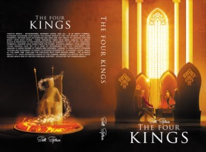

From the journal
5 Stars! ‘Delusional’ by Scott Spotson….Book Review!
http://tempestraven.wordpress.com/2013/12/19/5-stars-delusional-by-scott-spotson-book-review/
By TempestRaven
Delusional by Scott Spotson and Sue Publicover is one hell of a ride. It was one of those books I couldn’t put down until I read the last page. There were many things in the story which I know a lot of readers will enjoy. I really don’t know how to describe the whole work. You got a love story, an intriguing mystery, and even some paranormal in the mix. The author does an amazing job when it comes to introducing the characters.
There’s also a bigger mystery at play and that’s what the book opens with. I was excited to learn how the two major storylines connected together. I wanted to know how all the thefts would be connected to what was happening to Patricia. In the end, everything fell into to place and enhanced the experience. This story is a real page turner. The hallucinations that Patricia starts to experience really keeps the reader hooked: Who is behind all this? And how are they doing it? Were some of the questions that went through my mind as I kept reading. Is this whole story a big delusion as well? Now, that was the question I couldn’t get out of my mind. I don’t know if the author intended it, but I couldn’t trust anything I was reading. I felt as confused as Patricia.
I really don’t want to give anything away. Trying to write a review, especially of mysteries in which every character is connected to each other in a way and not to spoil anything, is really tough. However, I will say this that Delusional is a story that won’t disappoint readers who have interest in a mystery with a paranormal twist. At first, new characters might feel as too much, but that’s the beauty of it as every character has a connection. The dialogues don’t drag on forever, and that’s a plus for me. There is some repetition of information, but it doesn’t take away from the experience of the story. Even if some of you do figure out the ending, which I doubt, you will still read the whole thing just to be sure.
I give Delusional….5 Stars! Give it a read as well and please share your thoughts in the comments!
Scott Spotson twitter handle: @scott-spotson
Amazon (Kindle/Paperback)
B&N(Nook/Paperback)
By TempestRaven
Delusional by Scott Spotson and Sue Publicover is one hell of a ride. It was one of those books I couldn’t put down until I read the last page. There were many things in the story which I know a lot of readers will enjoy. I really don’t know how to describe the whole work. You got a love story, an intriguing mystery, and even some paranormal in the mix. The author does an amazing job when it comes to introducing the characters.

Most of the story is about Patricia Fowler. I really liked her character. Her inner voice is one of the highlights of the book. Her well-organized life changes when she finds herself falling for Paul Blast. Both are different, but seem to have a similar aim: The search for their soul mate. Reading about Patricia trying to stop herself from falling in love with her married co-worker was quite fun. Paul is a character that I felt sympathy for. He seems to be a guy who’s stuck in a marriage that doesn’t work for him anymore. He wants something different, someone who understands who ‘he’ is. However, his wife seems to have other plans that don’t bode well for him and Patricia.There’s also a bigger mystery at play and that’s what the book opens with. I was excited to learn how the two major storylines connected together. I wanted to know how all the thefts would be connected to what was happening to Patricia. In the end, everything fell into to place and enhanced the experience. This story is a real page turner. The hallucinations that Patricia starts to experience really keeps the reader hooked: Who is behind all this? And how are they doing it? Were some of the questions that went through my mind as I kept reading. Is this whole story a big delusion as well? Now, that was the question I couldn’t get out of my mind. I don’t know if the author intended it, but I couldn’t trust anything I was reading. I felt as confused as Patricia.
I really don’t want to give anything away. Trying to write a review, especially of mysteries in which every character is connected to each other in a way and not to spoil anything, is really tough. However, I will say this that Delusional is a story that won’t disappoint readers who have interest in a mystery with a paranormal twist. At first, new characters might feel as too much, but that’s the beauty of it as every character has a connection. The dialogues don’t drag on forever, and that’s a plus for me. There is some repetition of information, but it doesn’t take away from the experience of the story. Even if some of you do figure out the ending, which I doubt, you will still read the whole thing just to be sure.
I give Delusional….5 Stars! Give it a read as well and please share your thoughts in the comments!
Scott Spotson twitter handle: @scott-spotson
Amazon (Kindle/Paperback)
B&N(Nook/Paperback)